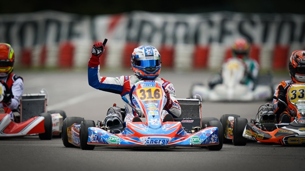
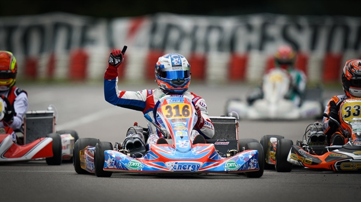

RK-Racing
RK-Racing is een jong, gemotiveerd en gepassioneerd raceteam die het hoogste niveau van de kartsport wilt bereiken. RK-Racing is begin 2023 opgezet en heeft een uitstekend eerste seizoen achter de rug. Wij kunnen niet wachten om het nieuwe seizoen in te gaan met nieuwe rijders, nieuwe karts en nieuw talent! Houd onze website in de gaten om te zien hoe succesvol wij zijn in het komende seizoen!
Nieuws

Jens Boerman sluit zich aan bij RK-Racing!
Met trots kondigen wij onze nieuwe coureur Jens Boerman aan. Jens
heeft vorig jaar gedomineerd op het WK en gaat naar verwachten een
goed seizoen tegemoet. Jens zal 21 januari direct actief zijn in
Assen!
Voor meer informatie:
Wedstrijd op het TT Assen circuit!
Jens Boerman sluit zich aan bij RK-Racing!
Met trots kondigen wij onze nieuwe coureur Jens Boerman aan. Jens
heeft vorig jaar gedomineerd op het WK en gaat naar verwachten een
goed seizoen tegemoet. Jens zal 21 januari direct actief zijn in
Assen!
Jens is tot nu toe maar liefst 4 keer gekroond tot Nederlands
Kampioen. Deze prachtige titels heeft hij behaald in de jaren
2017, 2018, 2019 en tot slot in 2023. Na corona ging het namelijk
wat minder vond Jens, maar dat mag de pret niet bederven. Ondanks
het feit dat hij in 2023 geen Nederlands Kampioen is geworden,
heeft hij gedomineerd op het WK Denemarken.
Het scheelde een nippertje, of Jens was gekroond tot
Wereldkampioen. Met zijn KZ2 kart, die op het rechte stuk een
topsnelheid van 140 kilometer per uur behaalde haalde hij iedereen
in, behalve de nummer 1. Ondanks Jens zijn top prestaties op het
WK, had hij nog steeds pech. Zijn motor begaf het in race 2, en
dat allemaal terwijl Jens aan de leiding stond!
In ieder geval weten wij als RK-Racing wel wat wij binnenhalen,
Jens is een echte aanwinst. Wij zijn erg blij met Jens en we gaan
er een paar ongelooflijk leuke jaren van maken!
Voor meer informatie over de race in Assen, klik hier:
Wedstrijd op het TT Assen circuit!

Ruben Texel wint het WK met RK-Racing!!!
Wij zijn ongelooflijk trots om te mogen delen dat Ruben Texel
wereldkampioen is geworden op het WK die gehouden is in Engeland!
Na een harde crash in de eerste race hebben onze monteurs de kart
optijd kunnen repareren voor een geweldige prestatie.
Ruben heeft al meerdere prijzen weten te winnen, maar het WK heeft
hij nog nooit gewonnen. Sterker nog, Ruben had nog nooit het WK
gereden! Een ongelooflijk knappe prestatie dus, want nog nooit
heeft iemand het WK gewonnen toen hij of zij voor het eerst
meedeed. Ruben heeft dus een wereldprestatie op zijn naam staan,
en wij voelen ons vereerd dat Ruben coureur is van RK-Racing
Ruben heeft niet alleen een beker meegenomen naar huis, maar
helaas ook een heleboel pijn! Ruben heeft namelijk een keiharde
crash gemaakt in de eerste race, de twee karts gingen wiel aan
wiel en Ruben vloog de lucht in. De kart had veel schade, maar
onze geweldige monteurs hebben de kart nog genoeg kunnen
repareren.
Echter voelde Ruben wel veel verschil in de prestaties van zijn
kart, maar toch is hij gekroond tot Wereldkampioen! Het is wel
jammer dat de kart veel beschadiging heeft opgelopen, de chassis
is gebogen en dat betekend dat hij zelfs met reparatie
nooit meer hetzelfde zal zijn...
Rowesh Kalloe is 21 januari terug op Assen!
In november 2023 mocht Rowesh zijn debuut maken in de Tillotson T4
series van Nederland bij Esmea Racing. Rowesh Kalloe keert deze
week terug, wederom op Assen. Deze wedstrijd is live te volgen via
YouTube, dus neem zeker een kijkje!
4 november 2023 maakte Rowesh Kalloe zijn professionele debuut in
de racekarts bij Esmea Racing op het circuit van Assen. Een vrij
snel en moeilijk circuit voor de eerste keer!
Rowesh begon op 16-jarige leeftijd met het karten bij Den Hartog
Racing, altijd op de indoor baan vlakbij. Een halfjaar later
debuteerde hij in het Europees Kampioenschap Huurkarten, en een
paar maanden later debuteerde hij in het Nederlands Kampioenschap
Huurkarten.
Na een hele dag getraind te hebben was het zover, Rowesh maakte 5
november 2023 zijn eerste meters in een echte wedstrijd met maar
liefst 24 coureurs die allemaal voor de hoogste plaats strijden!
Wat hem al direct opviel is de snelheid, binnen 5 seconden zat hij
dik op de 91 kilometer per uur, en dat nog met een basis
tandwielverhouding.
21 januari 2024 zal Rowesh zijn eerste race van het seizoen
verrijden met snellere tandwielverhouding, dus dit jaar gaat hij
ook een stuk sneller dan voorheen :)
Onze Foto's
 
